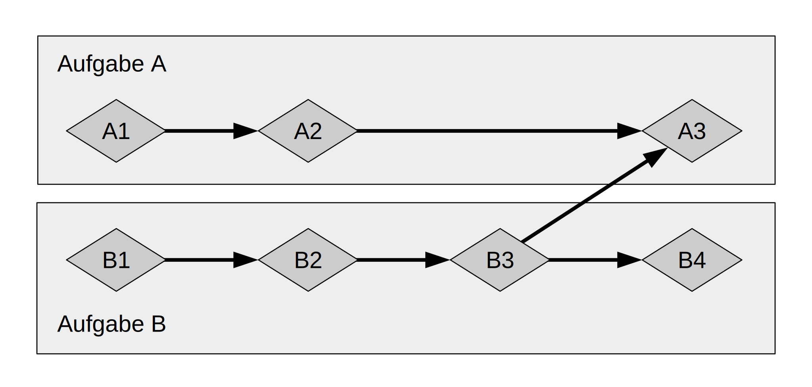

Grundlagen der asynchronen Programmierung: Async, Await, Futures und Ströme
Viele Operationen, die wir einen Computer ausführen lassen, können eine Weile
dauern, bis sie erledigt sind. Es wäre schön, wenn wir etwas anderes tun
könnten, während wir darauf warten, bis diese lang dauernden Prozesse
abgeschlossen sind. Moderne Computer bieten zwei Techniken, um mehr als einen
Vorgang gleichzeitig zu bearbeiten: Parallelität und Nebenläufigkeit. Sobald
wir jedoch anfangen, Programme zu schreiben, die parallele oder nebenläufige
Operationen beinhalten, stoßen wir schnell auf neue Herausforderungen, die mit
der asynchronen Programmierung verbunden sind, bei der Operationen nicht
unbedingt in der Reihenfolge beendet werden, in der sie begonnen wurden. Dieses
Kapitel baut auf der Verwendung von Strängen (threads) für Parallelität und
Nebenläufigkeit in Kapitel 16 auf, indem es einen alternativen Ansatz zur
asynchronen Programmierung vorstellt: Rusts Futures, Ströme (streams), die
unterstützende Syntax async und await, und die Werkzeuge für die Verwaltung
und Koordinierung zwischen asynchronen Operationen.
Schauen wir uns ein Beispiel an. Nehmen wir an, du exportierst ein Video, das du von einer Familienfeier erstellt hast – ein Vorgang, der zwischen Minuten und Stunden dauern kann. Der Videoexport wird so viel CPU- und GPU-Leistung wie möglich beanspruchen. Wenn du nur einen CPU-Kern hast und dein Betriebssystem den Export nicht anhält, bevor er abgeschlossen ist, d.h. wenn es den Export synchron ausführt, kannst du während dieser Zeit nichts anderes auf deinem Computer tun. Das wäre eine ziemlich frustrierende Erfahrung. Zum Glück kann das Betriebssystem deines Computers den Export oft genug unsichtbar unterbrechen, damit du gleichzeitig andere Arbeiten erledigen kannst.
Nehmen wir an, du lädst ein Video herunter, das von einer anderen Person geteilt wurde, was ebenfalls eine Weile dauern kann, aber nicht so viel CPU-Zeit in Anspruch nimmt. In diesem Fall muss die CPU warten, bis die Daten aus dem Netzwerk eintreffen. Du kannst zwar mit dem Lesen der Daten beginnen, sobald sie ankommen, aber es kann einige Zeit dauern, bis alle Daten eingetroffen sind. Selbst wenn alle Daten angekommen sind, kann es bei einem recht großen Video mindestens ein oder zwei Sekunden dauern, bis alles geladen ist. Das hört sich vielleicht nicht nach viel an, aber für einen modernen Prozessor, der jede Sekunde Milliarden von Operationen ausführen kann, ist das eine sehr lange Zeit. Auch hier wird das Betriebssystem dein Programm unsichtbar unterbrechen, damit die CPU andere Arbeiten ausführen kann, während sie auf den Abschluss des Netzwerkvorgangs wartet.
Der Videoexport ist ein Beispiel für einen CPU-gebundenen (CPU-bound) oder rechengebunden (compute-bound) Vorgang. Er ist durch die potenzielle Datenverarbeitungsgeschwindigkeit der CPU oder GPU des Computers begrenzt und dadurch, wie viel von dieser Geschwindigkeit er für den Vorgang nutzen kann. Der Videodownload ist ein Beispiel für einen E/A-gebunden (IO-bound) Vorgang, da er durch die Geschwindigkeit der Eingabe und Ausgabe des Computers begrenzt ist; er kann nur so schnell sein, wie die Daten über das Netzwerk gesendet werden können.
In beiden Beispielen stellen die unsichtbaren Unterbrechungen durch das Betriebssystem eine Form der Nebenläufigkeit dar. Diese Nebenläufigkeit findet allerdings nur auf der Ebene des gesamten Programms statt: Das Betriebssystem unterbricht ein Programm, damit andere Programme ihre Arbeit erledigen können. Da wir unsere Programme in vielen Fällen auf einer viel detaillierteren Ebene verstehen als das Betriebssystem, können wir Möglichkeiten zur Nebenläufigkeit sehen, die das Betriebssystem nicht erkennen kann.
Wenn wir beispielsweise ein Werkzeug zur Verwaltung von Dateidownloads entwickeln, sollten wir unser Programm so schreiben können, dass das Starten eines Downloads die Benutzeroberfläche nicht blockiert, und die Benutzer sollten in der Lage sein, mehrere Downloads zur gleichen Zeit zu starten. Viele Betriebssystem-APIs für die Interaktion mit dem Netzwerk sind jedoch blockierend, d.h. sie blockieren den Programmfortschritt, bis die Daten, die sie verarbeiten, vollständig verfügbar sind.
Hinweis: So funktionieren die meisten Funktionsaufrufe, wenn du darüber nachdenkst. Wir denken beim Begriff blockierend jedoch normalerweise an Funktionsaufrufe, die mit Dateien, dem Netzwerk oder anderen Ressourcen auf dem Computer interagieren, weil dies Stellen sind, an denen ein individuelles Programm davon profitieren würde, wenn die Operation nicht blockierend wäre.
Wir könnten das Blockieren unseres Hauptstrangs (main thread) vermeiden, indem wir für das Herunterladen jeder Datei einen eigenen Strang (thread) starten. Der Overhead dieser Stränge würde jedoch irgendwann zu einem Problem werden. Es wäre besser, wenn der Aufruf gar nicht erst blockiert würde. Es wäre auch besser, wenn wir in demselben direkten Stil schreiben könnten, den wir in blockierendem Code verwenden, ähnlich wie hier:
let data = fetch_data_from(url).await;
println!("{data}");Genau das bietet uns die async (kurz für asynchronous) Abstraktion von Rust. In diesem Kapitel wirst du alles über async lernen, indem wir die folgenden Themen behandeln:
- Wie man die Syntax
asyncundawaitvon Rust verwendet - Wie man das asynchrone Modell verwendet, um einige der gleichen Herausforderungen zu lösen, die wir uns in Kapitel 16 angeschaut haben
- Wie Mehrsträngigkeit (multithreading) und async komplementäre Lösungen bieten, die man in vielen Fällen kombinieren kann
Bevor wir uns jedoch ansehen, wie async in der Praxis funktioniert, müssen wir einen kleinen Abstecher zu den Unterschieden zwischen Parallelität und Nebenläufigkeit machen.
Parallelität und Nebenläufigkeit
Bislang haben wir Parallelität und Nebenläufigkeit als weitgehend gleichbedeutend behandelt. Jetzt müssen wir genauer zwischen ihnen unterscheiden, denn die Unterschiede werden sich bei der Arbeit zeigen.
Es gibt verschiedene Möglichkeiten, wie ein Team die Arbeit an einem Softwareprojekt aufteilen kann. Du könntest einem einzelnen Mitglied mehrere Aufgaben zuweisen oder jedem Teammitglied genau eine Aufgabe oder eine Mischung aus beiden Ansätzen verwenden.
Wenn eine Person an mehreren, verschiedenen Aufgaben arbeitet, bevor eine von ihnen abgeschlossen ist, handelt es sich um Nebenläufigkeit. Vielleicht hast du zwei verschiedene Projekte auf deinem Computer ausgecheckt, und wenn dir bei einem Projekt langweilig wird oder du nicht weiterkommst, wechselst du zum anderen. Da du nur eine Person bist, kannst du nicht an beiden Aufgaben gleichzeitig arbeiten, aber du kannst an mehreren Aufgaben arbeiten, indem du zwischen ihnen abwechselst (siehe Abbildung 17-1).

Abbildung 17-1: Ein nebenläufiger Arbeitsablauf, der zwischen Aufgabe A und Aufgabe B wechselt.
Wenn das Team eine Gruppe von Aufgaben aufteilt, indem jedes Mitglied eine Aufgabe übernimmt und sie alleine bearbeitet, ist das Parallelismus. Jede Person im Team kann genau zur gleichen Zeit Fortschritte machen (siehe Abbildung 17-2).

Abbildung 17-2: Ein paralleler Arbeitsablauf, bei dem die Arbeit an Aufgabe A und Aufgabe B unabhängig voneinander erfolgt.
Bei diesen beiden Arbeitsabläufen musst du dich möglicherweise zwischen verschiedenen Aufgaben abstimmen. Vielleicht dachtest du, die einer Person zugewiesene Aufgabe sei völlig unabhängig von der Arbeit der anderen, aber in Wirklichkeit muss eine andere Person im Team ihre Aufgabe zuerst erledigen. Ein Teil der Arbeit könnte parallel erledigt werden, aber ein Teil der Arbeit war eigentlich sequentiell: Sie konnte nur nacheinander stattfinden, eine Aufgabe nach der anderen, wie in Abbildung 17-3.
Abbildung 17-3: Ein teilweise paralleler Arbeitsablauf, bei dem die Arbeit an Aufgabe A und Aufgabe B unabhängig voneinander erfolgt, bis Aufgabe A3 durch die Ergebnisse von Aufgabe B3 blockiert wird.
Ebenso könntest du feststellen, dass eine deiner eigenen Aufgaben von einer anderen deiner Aufgaben abhängt. Jetzt ist deine nebenläufige Arbeit auch sequentiell geworden.
Parallelität und Nebenläufigkeit können sich auch gegenseitig überschneiden. Wenn du erfährst, dass ein Kollege nicht weiterkommt, bis du eine deiner Aufgaben beendet hast, wirst du dich wahrscheinlich ganz auf diese Aufgabe konzentrieren, um deinen Kollegen nicht weiter zu blockieren. Du und dein Kollege können nicht mehr parallel arbeiten, und du könntest auch nicht mehr nebenläufig an deinen eigenen Aufgaben arbeiten.
Die gleiche grundlegende Dynamik kommt bei Software und Hardware zum Tragen. Auf einem Rechner mit einem einzigen CPU-Kern kann die CPU nur eine Operation zur gleichen Zeit ausführen, aber sie kann dennoch nebenläufig arbeiten. Mithilfe von Werkzeugen wie Strängen, Prozessen und async kann der Computer eine Aktivität unterbrechen und zu einer anderen wechseln, bis er schließlich wieder zur ersten Aktivität zurückkehrt. Auf einem Computer mit mehreren CPU-Kernen kann er auch parallel arbeiten. Ein Kern kann eine Aufgabe erledigen, während ein anderer Kern eine komplett unabhängige, andere Aufgabe erledigt, und das sogar zur gleichen Zeit.
Wenn wir mit async in Rust arbeiten, haben wir es immer mit Nebenläufigkeit zu tun. Abhängig von der Hardware, dem Betriebssystem und der verwendeten asynchronen Laufzeitumgebung, die wir verwenden, kann die Nebenläufigkeit unter der Haube auch Parallelität nutzen.
Jetzt wollen wir uns ansehen, wie die asynchrone Programmierung in Rust tatsächlich funktioniert!